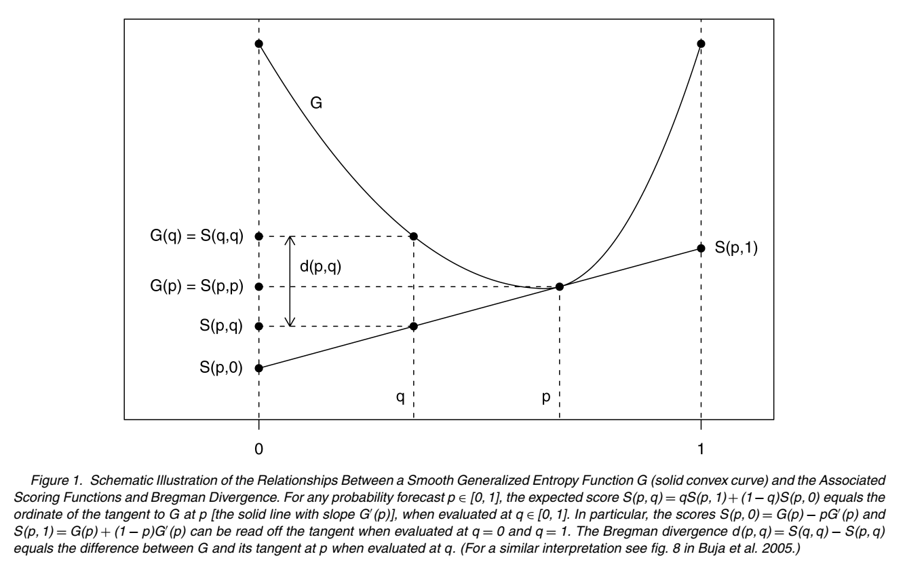
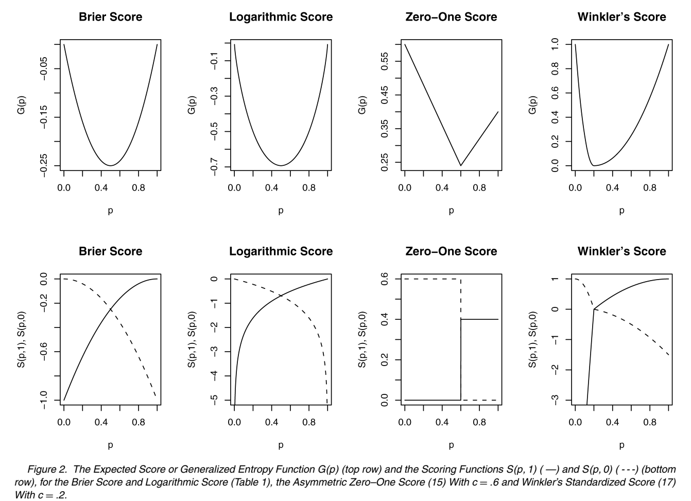
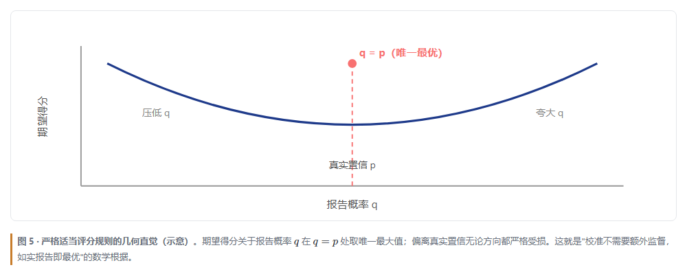
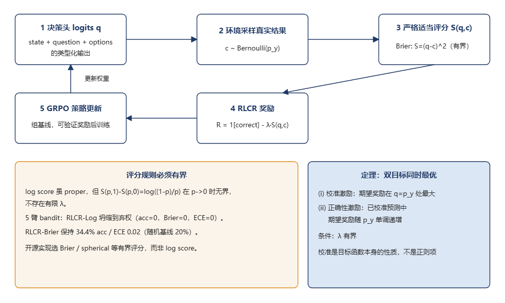
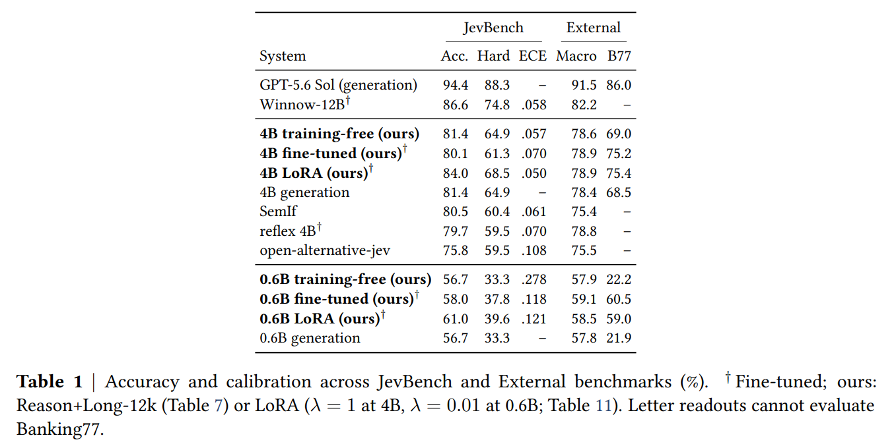
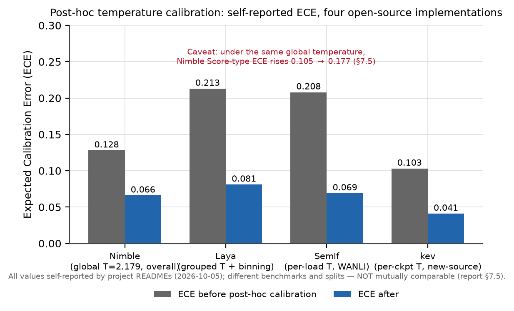

定位：这部分主要是对Jev背后涉及的数学机制进行基础铺垫 ——
校准概率"在数学上是什么？
训练它们的关键机制（评分规则 RL）为什么成立？
朴素方案为什么失败？
后处理校准能做到什么、做不到什么？
3.1、校准的数学定义
设模型对问题 x 给出选项 i 的概率 \(q_i\)，真实结果为 y（i 为正确选项）。校准（calibration）要求模型报告的概率与经验频率一致：
概率为 p 的预测，长期看恰好以比例 p 正确
官方定义，outcomes assigned 0.2 should occur about 20% of the time；
两个最常用的量化指标：
ECE（Expected Calibration Error）：把预测置信度分 M 个桶，对每个桶比较平均置信度与桶内正确率：
\(\mathrm{ECE}=\sum_{b=1}^{B}\frac{n_b}{N}\,\left|\,\mathrm{acc}(B_b)-\mathrm{conf}(B_b)\,\right|\)
其中 \(B_b\) 为第 b 个置信度桶，\(n_b\)为该桶样本数，\(\mathrm{conf}(B_b)\) 为桶内平均预测概率，\(\mathrm{acc}(B_b)\) 为桶内经验准确率；
ECE=0 是理想校准 —— 它惩罚的是"置信度与正确率的系统性偏差"，与准确率正交；也就是一个 95% 准确率但全部报 0.6 置信度的模型可以有很高的 ECE；
简单来讲：ECE 度量"准不准"，但它不惩罚"该自信时不自信"—— 要把准确率与校准压进同一个可优化的标量里，用的是 Brier 分数。
Brier 得分：在二元情况下，q 为预测正类概率、\(c\in\{0,1\}\) 为真实标签：\(\mathrm{S}(q,c)=(q-c)^2\)；多分类情况下推广为：
\(\mathrm{BS}=\sum_{k=1}^{K}(q_k-y_k)^2\)
其中，\(q_k\) 为模型对选项 k 的报告概率、\(y_k\in\{0,1\}\) 为 one-hot 真实结果；
实际操作当中，对BS分数的最小化，即等价于对负BS分数进行最大化，可以转化为我们的最大化目标函数；
实际意义上来讲：Brier 会同时惩罚"答错"与"过度自信"：
报 0.9 答对得 \((0.9−1)^2=0.01\)的小罚、答错得 \((0.9)^2\)=0.81 的大罚；
如上所示，Brier 得分把准确率与校准压进一个标量，是评分规则 RL 类算法（RLVR）的核心零件【进一步3.2内容】—— 这里解释下；
论文：《Strictly Proper Scoring Rules, Prediction, and Estimation》Gneiting & Raftery 2007
二元情形下，期望 Brier 可分解为校准项与锐度项之和（Rewarding Doubt 谱系共享的性质）：
\(\mathbb{E}_{y\sim p}\,\mathrm{BS}(q,y)=\underbrace{(q-p)^2}_{\text{校准偏差}}+\underbrace{p(1-p)}_{\text{与 }q\text{ 无关的锐度项}}\)
第二项 \(p(1-p)\) 是无论怎么报都存在的不可约噪声，因为真实结果本身的不确定性；第一项严格凸、存在唯一零点在 \(q=p\)；
这就解释了 Brier 为何同时压准确率与校准：它把两者合并进一个标量，因而成为评分规则 RL 的核心零件；
3.2、严格适当评分规则：为什么"报真实概率"是最优策略
定义：一个评分规则 \(S(q,c)\) 是严格适当（strictly proper）的，当且仅当在真实条件概率 (\(p_y\)) 下，报 (\(q=p_y\)) 使期望评分最优：
\(p_y=\arg\max_q\ \mathbb{E}_{c\sim\mathrm{Bernoulli}(p_y)}\,S(q,c)\)
直觉：
如果模型的真实置信是 p，那么无论它怎么在 q≠p 处夸大或压低，期望得分都严格更低；
这就把"如实报告概率"变成一个最优策略，而不是靠额外约束去要求；
其数学依据可以追溯至 Brier（1950）与 Gneiting & Raftery（2007）的严格适当评分规则理论，这里不在展开，如下所示就是恰当评分规则（proper scoring rule）+ Bregman 散度 + 凸共轭 / 熵的经典框架：
下图解释：光滑广义熵函数G（实心凸曲线）、配套得分函数以及 Bregman 散度之间关系的示意图
对任意概率预报\(p\in[0,1]\)，期望得分\(S(p, q) = qS(p, 1)+(1−q)S(p, 0)\)，等于G在p点处切线【斜率为\(G'(p)\)的实线】在\(q\in[0,1]\)处的纵坐标；
特别地，得分\(S(p, 0) = G(p) − pG'(p)\)、\(S(p, 1) = G(p) + (1 − p)G'(p)\)，可以通过把该切线分别取\(q=0\)和\(q=1\)读出；
Bregman 散度\(d(p, q) = S(q, q) − S(p, q)\)，等于函数G在q点的值减去G在p点的切线在q点的值；

目标：构造一类公平打分规则，同时附带一个衡量预测偏差的散度，保证评分是恰当合适的；
准确性要求：给预测打分，预测的越好则打分越高；
恰当性要求：模型如实报出真实概率 q，长期期望得分最高；故意谎报别的概率，期望得分只会更低；
附带一个散度指标（距离），来衡量分布 p 和真实分布 q 之间差多少；
问题是什么：随便写一个打分公式行不行？
很多打分方式不恰当：模型撒谎、报一个不是自己真实信念的概率，反而期望得分更高 —— 激励造假；并且得分、散度之间关系看不清！！
那么满足恰当性的一大族得分规则，有没有统一的 “母结构”？
怎么做：用一个光滑凸的广义熵函数 G 作为母函数，从它上面 “切一刀（切线）”，得到全部东西；
核心直觉：凸函数G+ 它在p处的切线 = 得分规则的生成器
选一个凸、光滑的广义熵函数G（图里那条向下凸的实线），这是 “母函数”。
固定一个预报值 p，求 G 在 p 点的切线，切线斜率就是导数 G′(p)。
这条切线本身，就是期望得分函数S(p,q)：输入真值概率 q，切线高度就是期望得分；
取 q=0，切线高度 = S(p,0)：事件不发生时的得分；
取 q=1，切线高度 = S(p,1)：事件发生时的得分；
直觉：一条切线，同时装下两种场景的得分，加权就是期望得分！！！
定义 Bregman 散度 \(d(p,q)=S(q,q)−S(p,q)\)【这里不是定义出来的哈，Bregman 散度本身就凸函数相对于自身切线的残差】
S(q,q)：拿真实概率 q 自己给自己打分（也就是 G(q)，曲线本身高度）
S(p,q)：拿预报 p 的切线在 q 处打分（切线高度）
也就是散度 = 凸曲线高度 − 切线高度，两点间的竖直距离
直觉：曲线和切线之间的竖直空隙，就是预报的损失 / 偏差 —— 空隙越大，预报越差！
注意：G 是熵（母函数），不是得分本身，切线才是得分！

Brier、spherical、对数评分都是 proper 的，但 线性评分（报 0 或 1 的期望最优）不是；
- 在恰当性得分体系下，二元 Brier 对应的体系概念为：
| 概念 | Brier 实例 |
|---|---|
| 母函数 \(G(p)\) | \(G(p)=p(1-p)\) |
| 导数 \(G'(p)\) | \(1-2p\) |
| 预报 p 对应的切线（期望得分） | \(S(p,q)=q\,S(p,1)+(1-q)\,S(p,0)=q\cdot(-(1-p)^2)+(1-q)\cdot(-p^2)\) |
| 发生（\(y=1\)）单点得分 \(S(p,1)\) | \(-(1-p)^2\) |
| 不发生（\(y=0\)）单点得分 \(S(p,0)\) | \(-p^2\) |
| Bregman 散度 \(d(p,q)\) | \((q-p)^2\)（平方损失，Brier 损失） |
- 严格适当性的意义在于：如果模型以"最小化期望评分"为目标训练，它的唯一不动点就是报真实概率——校准不是正则项，而是目标函数本身的性质 —— 也就是说，把校准写进目标函数！

【RLCR的背景扩展】RLCR 论文在理论上将该性质转化为可训练的 RL 奖励，并给出了两个关键定理，奠定了相应的理论基础。
RLCR 奖励：
\(R_{\mathrm{RLCR}}=\mathbb{1}[\text{correct}]-\lambda\,S(q,c),\qquad S(q,c)=(q-c)^2\)
其中第一项保留"答对"激励（就是普通 RLVR），第二项是则是二元 Brier 惩罚；
定理 1（双目标同时最优）：在 \(Bernoulli(p_y)\) 结果下，该奖励同时满足：
(i) 校准激励——对任意 y，期望奖励在 \(q=p_y\) 处最大；
(ii) 正确性激励——在所有已校准预测中，期望奖励随 \(p_y\) 单调递增;
附录 A 进一步证明该结论对任意有界 proper scoring rule 成立，条件是正确性系数 λ 满足\(\max_p [S(p,1)-S(p,0)]\le\lambda\)；
【RLCD训练范式把严格适当评分写入奖励的训练循环，如下示意图】

3.3、朴素方案为什么失败：零训练 logits 读出不等于天然校准
所谓的朴素方案即直接从LLM的输出头直接读出 option-token logits
来作为概率与置信度，这种方式看似免费，但它拿到的是条件于所给选项的分数，不是校准置信度。即便是走这种路线的开源方案
SemIf-OpenJev
也诚实声明： SemIf 返回概率 "conditional on the supplied options"，需在负载上自行校准。
就目前得到研究来看，可以从以下三个层面的机制分别讨论这个问题：
【训练方法层面】0/1 奖励 RL（RLVR）会把模型推向过度自信【主要论文 RLCR】
RLVR（0/1奖励RL）仅依据答案对错给奖励，不区分可靠答对和蒙对两种情况，容易让模型过度自信；它在域内（in-domain）降低ECE、改善校准，但域外（OOD）ECE上升，校准变差；
RLCR额外加入Brier惩罚，域内准确率几乎持平（63.0%→62.1%），同时大幅优化域内、域外ECE（OOD ECE 0.46→0.21），是该设置下唯一兼顾域内准确率、显著提升域外校准的方案。
RLCR 原文的对照实验（Qwen2.5-7B，HotpotQA）：RLVR域内准确率大幅提升（39.7%→63.0%），域内ECE 0.53→0.37，OOD ECE 0.40→0.46。
| 训练信号 | in-domain Acc | in-domain ECE | OOD Acc | OOD ECE |
|---|---|---|---|---|
| Base（提示输出置信度） | 39.7% | 0.53 | 53.3% | 0.40 |
| RLVR（仅正确性奖励） | 63.0% | 0.37 | 53.9% | 0.46 |
| RLCR（+Brier 惩罚） | 62.1% | 0.03 | 56.2% | 0.21 |
注意：“0/1奖励RL会恶化校准”不能一概而论，仅在域外平均上成立。
【评分规则/奖励层面】评分规则必须"有界"——log score 会诱发 reward hacking
对数评分（log score）虽是恰当评分，但无界：当预测置信度\(p \to 0\)时，对错回报差趋于无穷，无法找到有限系数保证激励单调，会引发奖励投机（reward hacking），模型倾向故意答错、报0置信度；
RLCR 论文的5臂老虎机实验佐证：基于对数评分的RLCR-Log坍缩为弃权策略，准确率为0；RLCR-Brier准确率34.4%、ECE=0.02，表现稳定;
结论：评分规则需要有界，这也是Laya等开源方案选用Brier、球形评分的原因；
【关于口头置信度的方案】verbalized confidence 未校准（语言化置信度 ≠ 概率）
口头置信度是另一种朴素方案，但 Kadavath 等（Anthropic，2022）系统测量了"模型嘴上说的确信度"与真实校准的差距：通过提示语（"True/False"）读出的 P(True) 明显优于自由文本置信度，但依然不是校准概率；
实际这也是上述讨论的生成式决策"的第三层浪费的机制根源 —— 也是 TDM "把概率当一等的输出结构"的核心动机；
论文 LLM2Jev 【2610.02076 & 微软《LLM-as-Jev: LLMs Are Already Jev-Style Decision Models -- When and How to Fine-Tune Them》】通过实证进一步说明了“朴素读出为何不够”，如下为论文在4B与0.6B模型上的对比情况：

Qwen3.5-4B（开箱冻结）：JevBench 81.4%，ECE 0.057，大基座（≥4B）原生表现尚可；
Qwen3-0.6B（开箱冻结）：JevBench 56.7%，ECE 0.278，初始交叉熵高于均匀随机，小基座判别力不足、校准崩溃【微调后可以提升，但具有条件性】；
对 4B基座 使用 95461条纯意图数据进行一轮训练后：在 JevBench 上指标 81.4% 反而降至 76.2%，ECE由0.057升至0.116 —— 域内拟合提升越好，分布外（OOD）校准会越差
训练数据的任务格式多样性与输入长度分布对齐至关重要；
仅堆砌短文本推理数据会损害长上下文决策能力；
整体核心结论：朴素读出不可靠【够大的基座（≥4B）开箱即可用、判别力不足的小基座（0.6B）校准直接崩溃】，进行微调训练能条件性提升性能，但纯意图数据训练容易损害OOD校准！
3.4、后处理校准：温度缩放与实测效果
另一个关键认识或教训是："判别训练"与"校准"是两个不同的目标
把前者拟合得更狠不会顺带拿到后者；小基座甚至需要先补判别力，再谈校准；
温度缩放是成本最低的后处理补救——把 logits 除以 T 再 softmax，通常 T 是需要在留出集数据上按照ECE/Brier 最小化进行拟合的：
$p_k=softmax(\frac{z_k}{T})_k,\ T^∗=\argmin_T NLL(留出集;T)$
\(z_k\) 为选项原始 logits，T>1时会压平分布、T<1 会锐化分布；
温度只重标定置信度、不改变 argmax，因此救不了判别力本身的缺陷；
如下为4个独立的开源项目关于温度缩放的使用和定位，目前看统一的结论为：全局使用单一温度对异构负载（不同数据集/领域）是不够，必须按题型/选项数/原语分桶拟合才会有效！！
| 开源实现 | 温度策略 | 校准效果 | 实际情况 |
|---|---|---|---|
| Nimble | 全局 T=2.179 | 整体 ECE 0.128→0.066； Score 题型 0.105→0.177 |
对比式数据整编后拟合【github.com/bespokelabsai/nimble】 |
| Laya | 按（题型×选项数）分组拟合 | ECE 0.466→0.081 | 分单元温度，非全局【github.com/NandhaKishorM/laya，见作者文档】 |
| SemIf | 每负载 T（1.23/2.50/1.71） |
WANLI ECE 0.208→0.069；其余组置信区间重叠 | out-of-fold【github.com/TheoLeeCJ/SemIf-OpenJev】 |
| agent-jev | 分原语温度 | Typed Decisions ECE 0.1687 | 120 留出校准【github.com/malevrigns/agent-jev】 |
Laya 按（题型×选项数）分组拟合温度把 ECE 从 0.466 压到 0.081，说明校准误差的分布是结构化的——这也是官方 K≤255 的两阶段打分（先独立打分再显式选择）背后要处理的同类问题；
直观效果比较【仅Nimble在使用全局单一温度时Score 题型 ECE 反升】：

- 但也需要注意一点：是不是仅需要做后处理温度缩放就够了？能不能在模型的微调与训练目标里就把校准优化掉？—— 显然是可以的！
3.5、校准的语义边界
校准是组率（统计样本上的结果），不是单例保证：官方明示"these rates describe groups of predictions, not a guarantee about any single answer"，也就是单个决策的 0.6 概率既不保证对也不保证错；
概率是条件的：SemIf 明示返回概率"conditional on the supplied options"，须在使用负载上自行校准验证 —— 同一问题换选项措辞，概率含义也会随之变化（选项敏感性问题见后续讨论）；
评分规则 RL 是"校准训练"的机制核心：RLCD（官方）、RLCR（学术）、Laya/OpenJev-RLCD（开源）等均基于同一数学内核实现，它们的差异仅在奖励组成、数据组织与公开程度，更具体的内容会在后续训练方法与数据部分讨论。